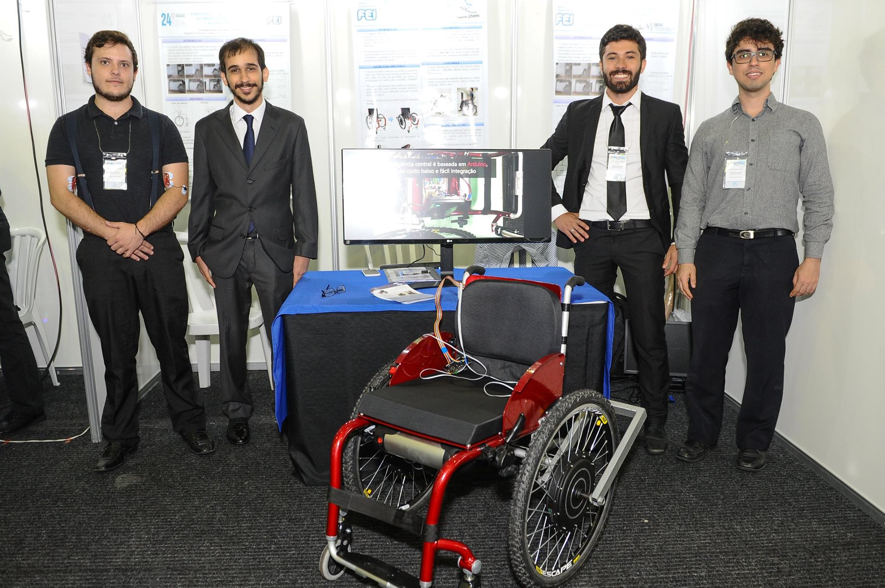

Cadeira de Rodas Motorizada e Controlada por Sensores Eletromiográficos
Alunos do curso de Engenharia de Automação e Controle constrói protótipo de uma cadeira de rodas motorizada. Por meio da reestruturação mecânica e do desenvolvimento dos circuitos de potência e de comando, foi possível prepará-la para ser usada em futuras pesquisas correlacionadas a tecnologia assistiva.
Do lado esquerdo para direita temos: Pedro Pasquini, Yuri Iasbech, Erivelton Gualter e João Galhianne
Esta cadeira de rodas foi preparada para uma parcela específica de usuários, classificado como paraplégicos, e que, portanto, podem acionar motores embarcados na cadeira por meio de sensores eletromiográficos para controlar a direção que a cadeira deve tomar.